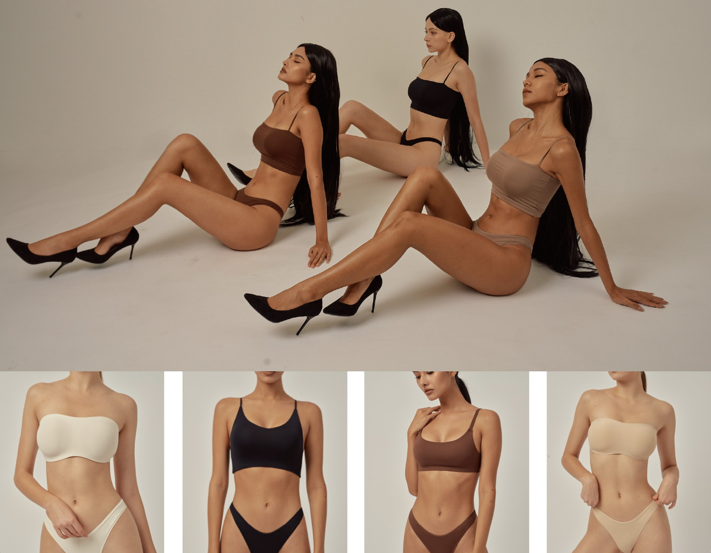
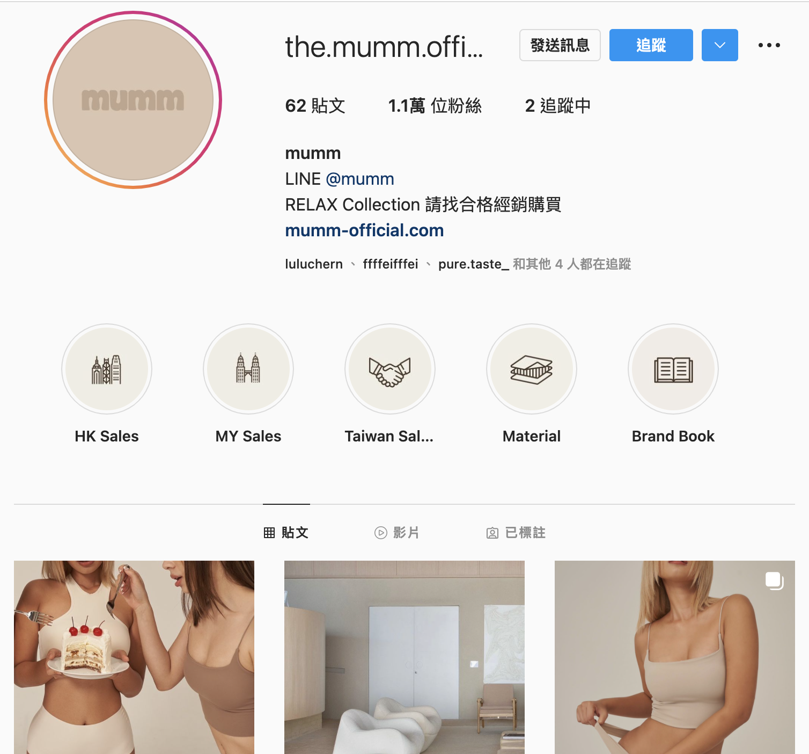
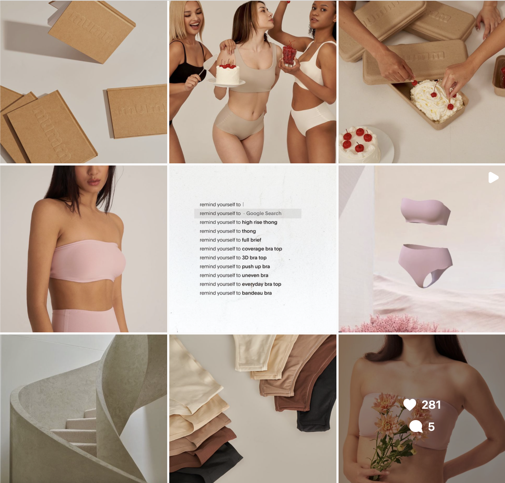
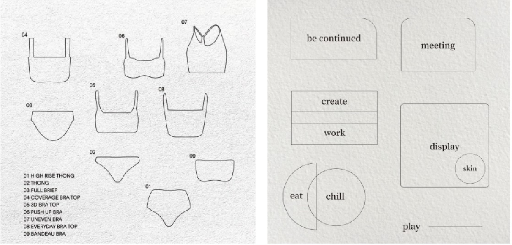
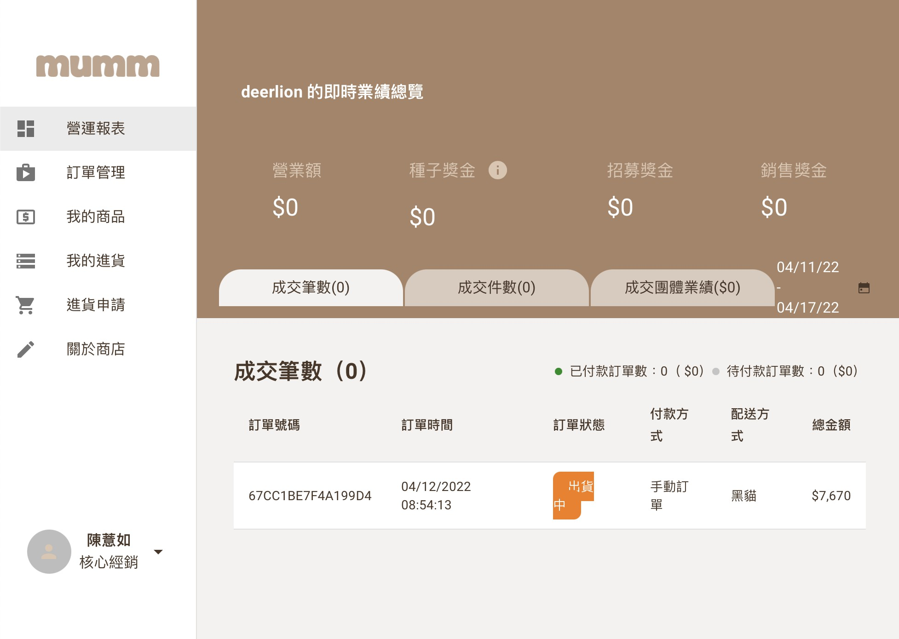
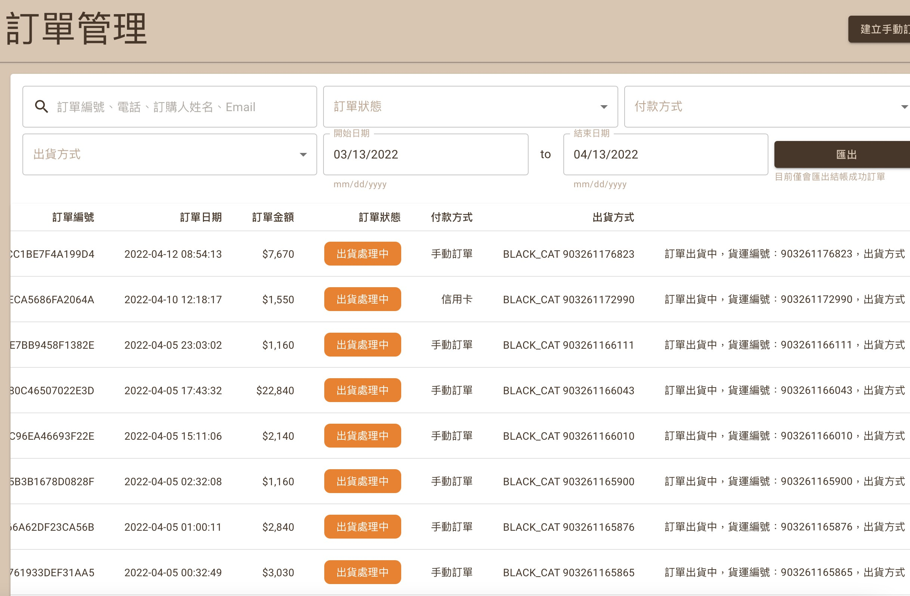
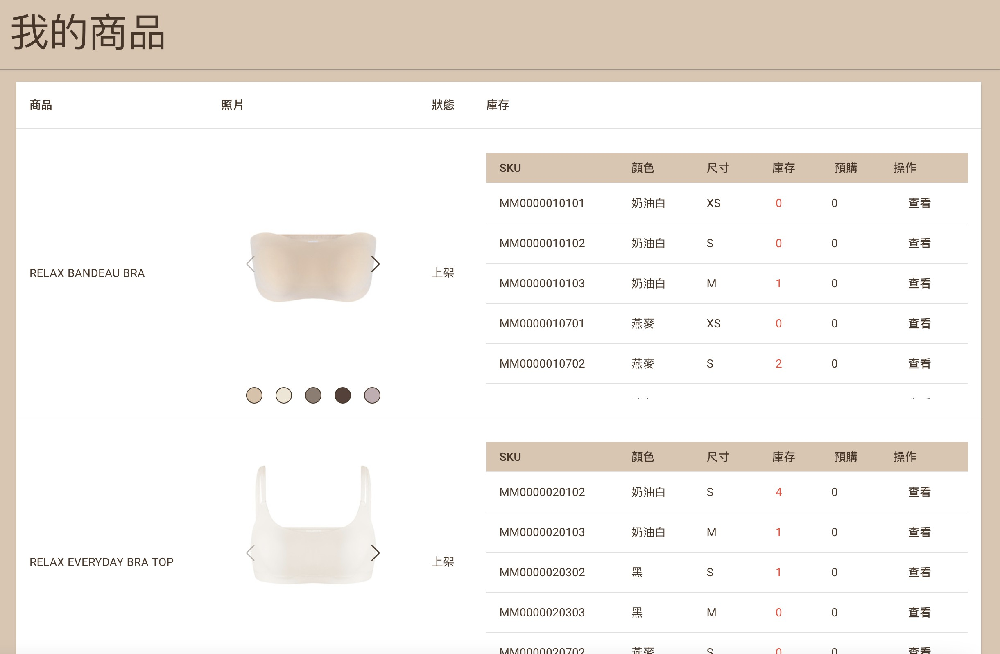
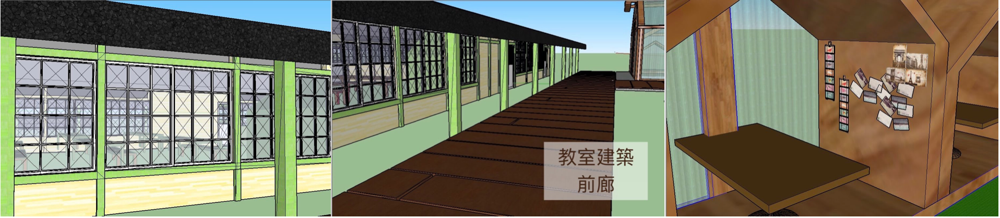
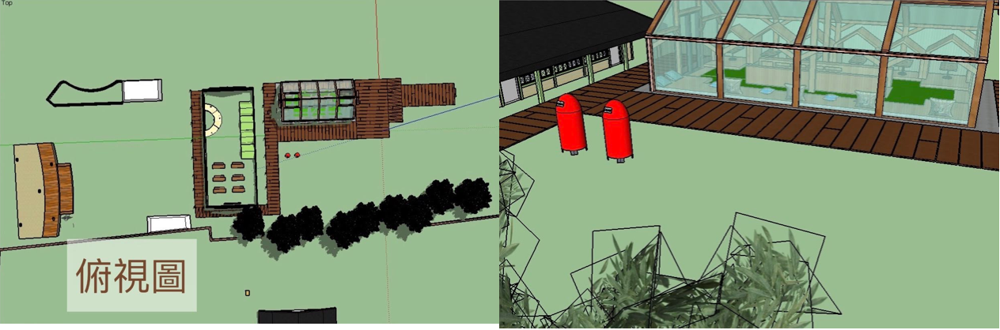
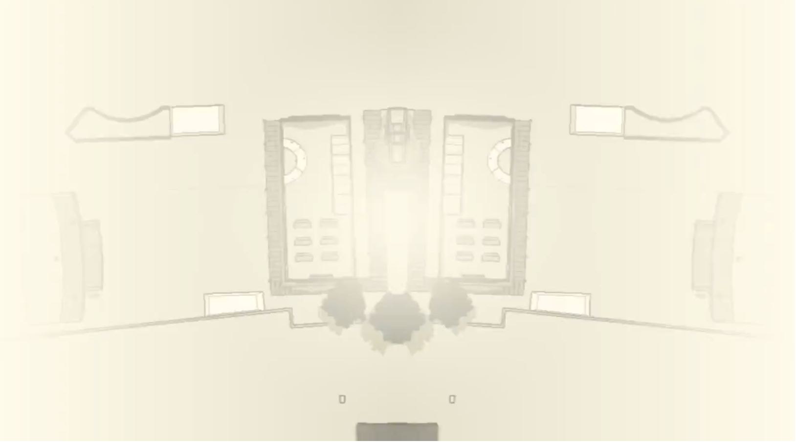

Startup - Mumm鹿沐
Mumm, the sportswear startup business co-founded by me and my friend. In this startup, I built up a main website to manage 10+ other websites. In a short period of time, we attracted over 10000 followers on the platform. By analyzing the backend of the main website, I also know the trend and orders in one season and provide business and data analysis work.
Mumm鹿沐
The mission of Mumm鹿沐 is to share resources and have positive impact on society. We embrace different races and different shapes of women.
Platform
I spent two months interviewing people who shared a past and present with the kindergarten, including operators, alumni, to understand what makes the place unique and memorable. It is a pity that these cultures are no longer preserved in the current society. Fortunately, this kindergarten has been preserved. As long as it is planned, I believed people today can still appreciate the atmosphere at that time.
     Layout
Tea corner in the Tea House:
A pane of glass insulates the outside noise, allowing visitors to savor their teas in peace
while taking in the beauty of Changhua.
Many cottage-styled seats lie on the other side of the glass.
Inside the main building, a postcard area offers unique souvenirs for visitors to post to an address of their choosing.  Civic square and an enclosed green space:
It is a place where people meet and talk and develop a shared sense of identity. When visitors sit and sip their teas, they will see an enclosed green space lined with some handsome trees that still stand tall today at 100 years old.  
Self-Designed Merchandising
Postcards and envelope sets:
Nostalgic Japanese style featuring cultural destinations in Changhua.
Postage stamps and chops:
Celebrate tradition and the natural landscapes in Changhua. The stamp is based on the
traditional water ripple postmark, and the pattern on it is made of the natural characteristics
of Changhua.
You can see the results videos and news about us below: